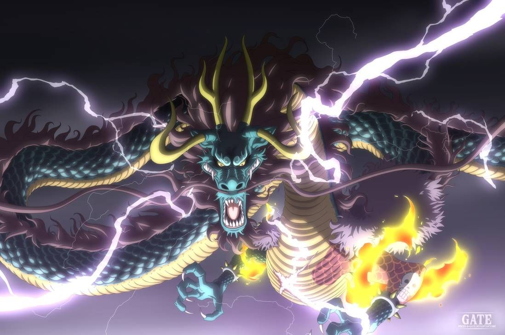

One Piece
One Piece (ワンピース?) es un manga escrito e ilustrado por el mangaka japonés Eiichirō Oda. Comenzó a publicarse en la revista Japonesa Weekly Shōnen Jump el 22 de julio de 1997 y a la fecha se han publicado 105 volúmenes. One Piece es el manga más vendido de la revista Weekly Shōnen Jump (la más importante, reconocida y vendida del medio), de la Editorial Shueisha, y de toda la historia de Japón, con más de 516 millones de copias vendidas a nivel mundial (416 millones en Japón, y 100 millones en 60 países juntos), y en Japón fue el manga más vendido de manera consecutiva desde el año 2007 hasta 2018 logrando un récord histórico.
En la encuesta realizada por la cadena de televisión japonesa TV Asahi para elegir los 100 Mejores mangas de la historia, One Piece alcanzó el puesto número 01
La serie comienza con la ejecución de Gold Roger, un hombre conocido como El Rey de los Piratas. Justo antes de su muerte, Gol D Roger hace mención de su gran tesoro legendario, el One Piece y que puede ser tomado por quien lo encuentre. Esto marca el inicio de una era conocida como la Gran Era Pirata.
Más de veinte años después de la muerte de Roger,
el One Piece sigue sin ser encontrado. Un joven llamado Monkey D. Luffy,
quien comió la Fruta Goma Goma, la cual le otorgó elasticidad,
inspirado por la admiración que desde su infancia le tiene al poderoso pirata Shanks el Pelirrojo,
comienza su aventura desde su hogar en el mar East Blue para encontrar el One Piece y
autoproclamarse como el nuevo Rey de los Piratas.
Es el manga que más ganancias ha reportado a su autor ostentando el Récord Guinness como el manga con mayor cantidad de copias publicadas de la misma obra de cómic realizado por un único autor en todo el mundo.
La historia de One Piece narra las aventuras de una tripulación de piratas que se embarcan para encontrar un tesoro denominado el One Piece. Si bien la mayoría de los personajes son navegantes, estos se distinguen de la Marina, q ue es una organización encargada de controlar y mantener apaciguados a los piratas que causan estragos en islas, pueblos y ciudades neutrales; sin embargo, en la serie se muestra que el Gobierno Mundial, la organización que administra a la Marina, se encuentra bajo la corrupción y la manipulación.
ü襂Äç‚ò†Ô∏èOne Piece: Top Personajes Favoritos ü襂Äç‚ò†Ô∏è

Monkey D. Luffy
Monkey D. Luffy, más conocido como Luffy «Sombrero de Paja», es el protagonista principal de la serie de manga y anime One Piece. Es el capitán y fundador de los Piratas de Sombrero de Paja así como un de los Cuatro Emperadores que gobiernan los mares del Nuevo Mundo.
Last updated 3 mins ago

Edward Newgate
Edward Newgate, más conocido como Barbablanca, fue el capitán de los Piratas de Barbablanca y el histórico rival de Gol D. Roger. Tras la muerte de este, fue conocido como el Hombre más cercano al One Piece, además de ser reconocido como el Hombre más fuerte del Mundo
Last updated 3 mins ago

Gol D. Roger
Gol D. Roger mejor conocido como Gold Roger, fue el capitán de los Piratas de Roger, siendo a su vez conocido como el Rey de los Piratas, título que le fue concedido tras conquistar todo el Grand Line, y al ser el dueño del legendario tesoro conocido como «One Piece» tras ser el primero junto a su tripulación en llegar a Laugh Tale en los últimos ochocientos años.
Last updated 3 mins ago

Shanks
Shanks el Pelirrojo, es el capitán de los Piratas del Pelirrojo y uno de los Cuatro Emperadores que gobiernan el Nuevo Mundo. Fue, además, un miembro de la legendaria tripulación de Gol D. Roger, siendo la única banda que logró conquistar con éxito todo Grand Line.
Last updated 3 mins ago

Roronoa Zoro
Roronoa Zoro, conocido como El Cazador de Piratas, es el combatiente de los Piratas de Sombrero de Paja, y uno de sus dos espadachines, así como un antiguo cazarrecompensas. Fue el primer miembro en unirse a la tripulación, y es considerado parte del Trío Monstruoso junto a Luffy y Sanji.
Last updated 3 mins ago

Vinsmoke Sanji
Sanji, conocido como Pierna Negra y nacido como Vinsmoke Sanji, es el cocinero de los Piratas de Sombrero de Paja. Es el quinto miembro de la tripulación, y el cuarto en unirse. Él nació en el North Blue, siendo el primer tripulante en no ser originario del East Blue.
Last updated 3 mins ago

Kaidou
Kaidou de las Bestias , conocido también como la Criatura más Poderosa , es el gobernador general de los Piratas de las Bestias y ejerció como uno de los Cuatro Emperadores hasta que perdió dicho título cuando fue derrotado durante el asalto a Onigashima. Fue además un aprendiz de los legendarios Piratas de Rocks durante su juventud. Fue el tercer emperador en ser mencionado y el último en hacer aparición.
Last updated 3 mins ago

Yamato
Yamato , también conocida como Princesa Oni es la hija del antiguo Emperador Kaidou. Entrenada desde joven para ser la heredera de Kaidou, Yamato desarrolló en cambio una profunda admiración por el samurái Kozuki Oden. Tras su muerte, Yamato decidió «convertirse» en Oden, haciéndose pasar por él y adoptando sus modales.
Last updated 3 mins ago

Charlotte Katakuri
Charlotte Katakuri es el segundo hijo varón de la familia Charlotte y el tercero de los hermanos, además es el mayor de sus hermanos mellizos Daifuku y Oven. Ejerce como uno de los tres comandantes sweet de los Piratas de Big Mom y de ministro de la harina en Totto Land; gobernando la isla Komugi.
Last updated 3 mins ago

Marshall D. Teach
Marshall D. Teach, más conocido como Barbanegra es el almirante de los Piratas de Barbanegra y uno de los Cuatro Emperadores que gobiernan los mares del Nuevo Mundo, estatus que consolidó tras su victoria en la Batalla de la Venganza frente a los Piratas de Barbablanca.
Last updated 3 mins ago

Trafalgar D. Water Law
Trafalgar D. Water Law, simplificado a Trafalgar Law y conocido como Cirujano de la Muerte , es un reconocido pirata del North Blue que ejerce como capitán y médico de los Piratas de Heart, siendo a su vez un anterior integrante de los Siete Guerreros del Mar. Al ser uno de los once Supernovatos que desembarcaron en Sabaody hace dos años, forma parte de lo que se conoce como «la peor generación» de piratas de la historia.

Donquixote Doflamingo
Donquixote Doflamingo, más conocido por sus epítetos: Yaksha Celestial en el mundo de la piratería, Joker en el Inframundo; y el Carisma del Mal; es un antiguo Señor de la Guerra del Mar, que reinaba en Dressrosa, y un anterior Noble Mundial. Hijo de Donquixote Homing y hermano mayor de Donquixote Rosinante, es un integrante de la Familia Donquixote, la familia real regente hace ochocientos años en el país.
Last updated 3 mins ago

Monkey D. Garp
Monkey D. Garp, más conocido por sus epítetos: Garp el Puño o el Héroe de la Marina es un vicealmirante del cuartel general de la Marina en calidad de instructor de nuevos reclutas Él es el padre de Dragon el Revolucionario, el abuelo paterno de Luffy Sombrero de Paja, así abuelo adoptivo de Ace Puño de Fuego.Last updated 3 mins ago

Silvers Rayleigh
Silvers Rayleigh, también conocido como Rey Oscuro, o La Mano Derecha del Rey de los Piratas fue el primer oficial de la tripulación de Gol D. Roger y uno de sus fundadores, pero en algún punto posterior a la disolución de la tripulación, se convirtió en ingeniero en el Archipiélago Sabaody y se dedica a recubrir barcos que se preparan para ir a la isla Gyojin. Se convirtió en el maestro de Monkey D. Luffy durante un año y medio.
Last updated 3 mins ago

Sakazuki
Sakazuki, más conocido como Akainu («Perro Rojo») es el almirante de la flota del cuartel general de la Marina. Actuó como antagonista principal en el arco de Marineford y, como tal, como uno de los antagonistas centrales de la saga de la Guerra en la Cumbre. Tras su ascenso a líder de los marines, se ha convertido en uno de los antagonistas principales de la serie.
Last updated 3 mins ago
ü襂Äç‚ò†Ô∏èResumen de las Temporadasü襂Äç‚ò†Ô∏è
La historia de one piece - Draw my life
Last updated 3 mins ago
Top 10 Mayores demostraciones de poder en One Piece
Last updated 3 mins ago
One Piece FILM RED Resumen - En 10 minutos
Last updated 3 mins ago
5 Razones para ver one piece
Last updated 3 mins ago
Explicacion de todas las peliculas de One Piece
Last updated 3 mins ago
GOD PIECE - One piece (Sub español) [FINAL]
Last updated 3 mins ago